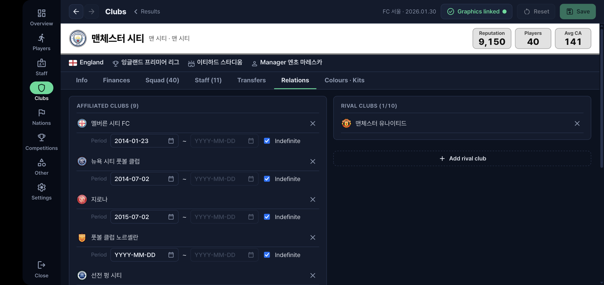
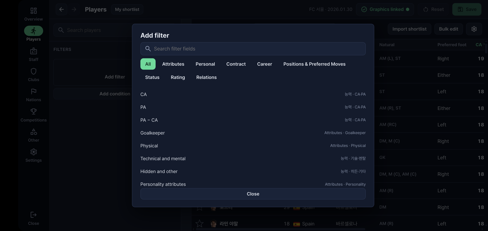
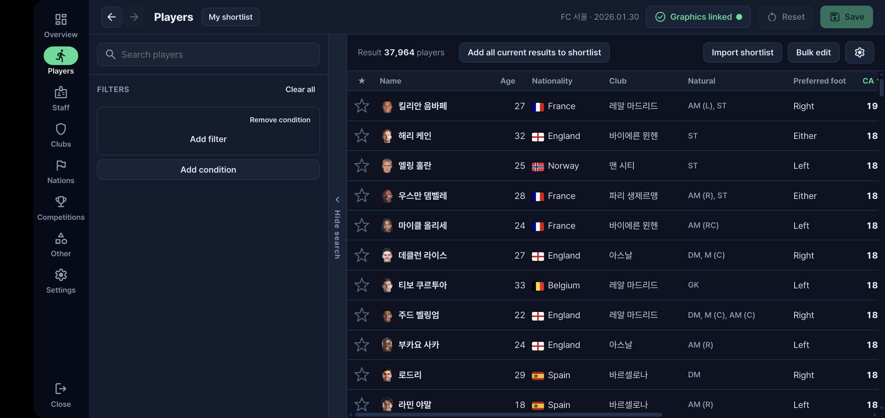

Attributes & hidden values
Edit the player you imagined.
Edit technical, mental and physical attributes, CA, PA and hidden personality values. Shape the details that make each player unique.
Related guide
MANAGER SAVE EDITOR · FOR FMM27
Make more of your Football Manager Mobile 2027 save. From players to clubs, shape your own football world.
01 / FEATURES
Start with one player. Reimagine your whole football world. Explore what MSE is being built to do.
Attributes & hidden values
Edit technical, mental and physical attributes, CA, PA and hidden personality values. Shape the details that make each player unique.
Related guidePurchase price
Explore the purchase amount calculated from the selling club’s fee acceptance criteria. Plan beyond the displayed market value. Personal contract agreement is a separate step.
Related guide
Player ratings
Explore position and role ratings to discover a player’s strengths and where to use them.
Related guide
Growth ratings
Compare current and growth ratings side by side to distinguish immediate impact from long-term potential.
Related guide
Player growth
Apply step-by-step growth or full potential using growth calculations studied from the game engine. Pace, strength and stamina use model-based approximations.
Related guide
Retirement announcements & cancellation
Review retirement schedules, cancel retirement or set an announcement to change the final chapter of a player’s career.
Related guide
Bulk player editing
Edit multiple fields across search results or a shortlist. Adjust values, set lower and upper limits, and preview each player’s changes before applying.
Related guideRecovery & condition
Clear injuries and restore condition and morale. Review one player or use recovery quick buttons for several players.
Related guidePlayer transfers
Recruit, transfer or release players. Select players from the club transfer tab and reshape your squad.
Related guide
Affiliated clubs
Add affiliated clubs, set relationship dates, and manage rival clubs.
Related guide
Club league swaps
Swap league places between two clubs or rotate several clubs. The new league takes effect next season after the current season ends.
Related guide
Find regenerated players
Explore regeneration information and estimated original-player matches to discover the next generation.
Related guide
Shortlists
Star players to build a shortlist. Search, filter, sort and customize columns to compare your candidates.
Related guide
Graphics patches
Register, replace or delete player faces, club and competition logos, and kits. Access to game graphics requires Shizuku.
Related guide
02 / DOWNLOAD
The download link and QR code will appear here once the app is available.